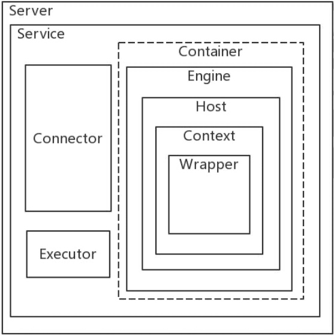
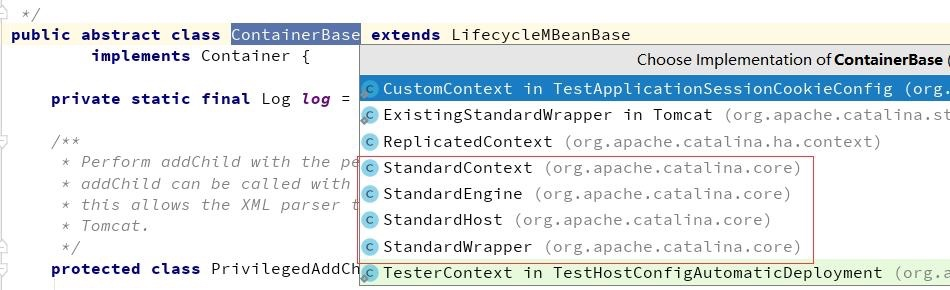
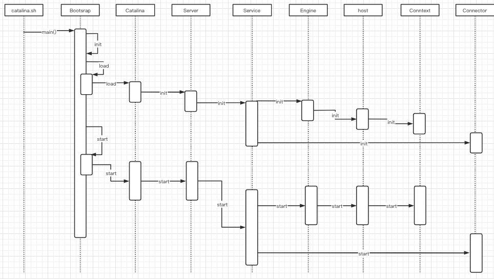
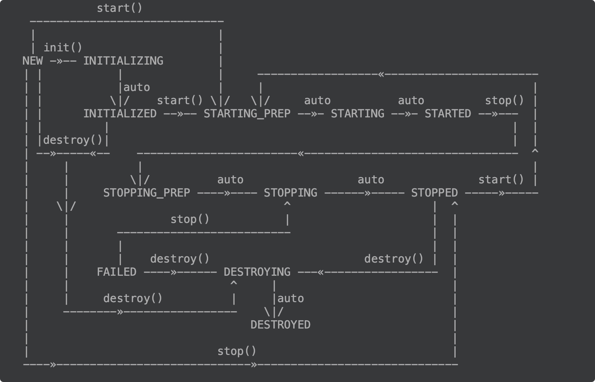
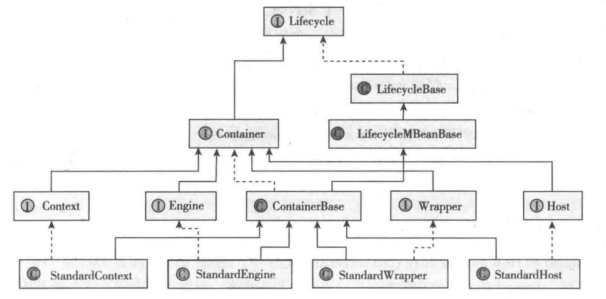

Tomcat 是一款Servlet容器实现的轻量级 Web 应用服务器
Servlet 严格来讲是指 Java 语言实现的一个接口，一般情况下我们说的 Servlet 是指任何实现了这个 Servlet 接口的类。
- 实例化并调用 init()方法初始化该 Servlet，一般 Servlet 只初始化一次(只有一个对象)
- service()(根据请求方法不同调用 doGet() 或者 doPost()，此外还有 doHead()、doPut()、doTrace()、doDelete()、doOptions()、destroy())。
- 当 Server 不再需要 Servlet 时(一般当 Server 关闭时)，Server 调用 Servlet 的 destroy() 方法。
Tomcat 组件以及架构
tomcat组件
Tomcat 通过 Catalina 管理 server，Catalina是整个 tomcat 的管理类，它里面有三个方法 load、start、stop 管理服务器的整个生命周期,
- load 方法用于根据 conf/server.xml 文件创建 Server 并调用 Server的 init方法进行初始化
- start 方法用于启动服务器
- stop 方法用于停止服务器
Server
Server是最顶级的组件，它代表 Tomcat 的运行实例，掌控着整个 Tomcat 的生死大权
- 提供了监听器机制，用于在 Tomcat 整个生命周期中对不同事件进行处理
- 提供 Tomcat 容器全局的命名资源实现，JNDI
- 监听某个端口以接受 shutdown 命令，用于关闭 Tomcat
Service
一个Service维护多个 Connector 和一个 Container
Connector
链接器，监听转换 Socket 请求，将请求交给 Container处理，支持不同协议以及不同的 IO 方式
Connector 链接器封装了底层的网络请求(Socket 请求及相应处理),提供了统一的接口，使 Container 容器与具体的请求协议以及 I/O 方式解耦。
Connector 将 Socket 输入转换成 Request 对象，交给 Container 容器进行处理，处理请求后，Container 通过 Connector 提供的 Response 对象将结果写入输出流。
Container
Container 表示能够执行客户端请求并返回响应的一类对象，其中有不同级别的容器：Engine、Host、Context、Wrapper，它们各自的实现类分别是 StandardEngine、StandardHost、StandardContext 和 StandardWrapper
通过Connector的处理，无论是 Request 对象还是 Response 对象都没有实现 Servlet 规范对应的接口，Container 会将它们进一步分装成 ServletRequest 和 ServletResponse
Standard的 Container 是直接继承抽象类：org.apache.catalina.core.ContainerBase，这里定义了Container容器的startInternal、initInternal 通用处理模板方法，如下图所示

Engine
servlet 引擎，最高级的容器对象,管理多个站点，一个service最多只能有一个engine
Host
代表一个站点，通过配置Host就可以添加站点，它是 Servlet 引擎中的虚拟机，主要与域名相关，一个服务器有多个域名时需要使用多个 Host
Context
用于表示 ServletContext，一个ServletContext代表一个独立的web应用程序。
Wrapper
用于表示 Web 应用中定义的 Servlet
Executor
tomcat 组件间可以共享的线程池
Tomcat 启动流程
Tomcat 从 bin 目录下的启动文件启动 Tomcat的时候，流程如下图所示

Tomcat处理一个 HTTP 请求的完整请求过程
- 用户点击网页内容，请求被发送到本机端口 8080，被在那里监听的 Coyote HTTP/1.1 Connector 获得。
- Connector 把该请求交给它所在的 Service 的 Engine 来处理，并等待 Engine 的回应。 Engine 获得请求 localhost/test/index.jsp，匹配所有的虚拟主机 Host。
- Engine 匹配到名为 localhost 的 Host(即使匹配不到也把请求交给该 Host 处理，因为该 Host 被定义为该 Engine 的默认主机)，名为 localhost 的 Host 获得 请求/test/index.jsp，匹配它所拥有的所有的 Context。Host 匹配到路径为/test 的 Context(如果匹配不到就把该请求交给路径名为“ ”的 Context 去处理)。path=“/test”的 Context 获得请求/index.jsp，在它的 mapping table 中寻找出对应的 Servlet。Context 匹配到 URL PATTERN 为*.jsp 的 Servlet,对应于 JspServlet 类。
构造 HttpServletRequest 对象和 HttpServletResponse 对象，作为参数调用 JspServlet 的 doGet()或 doPost().执行业务逻辑、数据存储等程序。
- Context 把执行完之后的 HttpServletResponse 对象返回给 Host。
- Host 把 HttpServletResponse 对象返回给 Engine。
- Engine 把 HttpServletResponse 对象返回 Connector。 Connector 把 HttpServletResponse 对象返回给客户 Browser
Bootstrap 启动过程
/**
* 1、创建 Bootstrap实例
* 2、根据传入参数执行 start、stop
*/
public static void main(String args[]) {
synchronized (daemonLock) {
if (daemon == null) {
//创建 Bootstrap 实例，但是在init方法执行之前不要设置到 daemon 变量中
Bootstrap bootstrap = new Bootstrap();
try {
bootstrap.init();
} catch (Throwable t) {
handleThrowable(t);
t.printStackTrace();
return;
}
daemon = bootstrap;
} else {
Thread.currentThread().setContextClassLoader(daemon.catalinaLoader);
}
}
try {
String command = "start";
if (args.length > 0) {
command = args[args.length - 1];
}
if (command.equals("startd")) {
args[args.length - 1] = "start";
daemon.load(args);
// 主要三件事setWait(true)、load(args)、start()
daemon.start();
} else if (command.equals("stopd")) {
args[args.length - 1] = "stop";
daemon.stop();
} else if (command.equals("start")) {
daemon.setAwait(true);
daemon.load(args);
daemon.start();
if (null == daemon.getServer()) {
System.exit(1);
}
} else if (command.equals("stop")) {
daemon.stopServer(args);
} else if (command.equals("configtest")) {
daemon.load(args);
if (null == daemon.getServer()) {
System.exit(1);
}
System.exit(0);
} else {
log.warn("Bootstrap: command \"" + command + "\" does not exist.");
}
} catch (Throwable t) {
// Unwrap the Exception for clearer error reporting
if (t instanceof InvocationTargetException &&
t.getCause() != null) {
t = t.getCause();
}
handleThrowable(t);
t.printStackTrace();
System.exit(1);
}
}
public void init() throws Exception {
// 初始化类加载器，设置commonLoader、catalinaLoader、sharedLoader
initClassLoaders();
Thread.currentThread().setContextClassLoader(catalinaLoader);
SecurityClassLoad.securityClassLoad(catalinaLoader);
// Load our startup class and call its process() method
if (log.isDebugEnabled())
log.debug("Loading startup class");
// 实例化 Catalina
Class<?> startupClass = catalinaLoader.loadClass("org.apache.catalina.startup.Catalina");
Object startupInstance = startupClass.getConstructor().newInstance();
// Set the shared extensions class loader
if (log.isDebugEnabled())
log.debug("Setting startup class properties");
String methodName = "setParentClassLoader";
Class<?> paramTypes[] = new Class[1];
paramTypes[0] = Class.forName("java.lang.ClassLoader");
Object paramValues[] = new Object[1];
paramValues[0] = sharedLoader;
Method method =
startupInstance.getClass().getMethod(methodName, paramTypes);
method.invoke(startupInstance, paramValues);
// 设置 catalina实例
catalinaDaemon = startupInstance;
}
// catalinaDaemon 是 Catalina 实例
public void start()
throws Exception {
if( catalinaDaemon==null ) init();
Method method = catalinaDaemon.getClass().getMethod("start", (Class [] )null);
method.invoke(catalinaDaemon, (Object [])null);
}
- 实例化 Bootstrap
- 执行 bootstrap的init方法
- 初始化类加载器(commonLoader、catalinaLoader、sharedLoader)
- 实例化 Catalina
- 调用 start 方法
- 检查 Catalina 实例是否初始化
- 执行 Catalina 实例的 start 方法
Catalina 的启动过程
Catalina的启动过程主要完成这几件事：
- setWait(true)
设置server启动后是否进入等待状态
- load(args)
依据conf/server.xml 配置文件初始化 Server 对象，然后调用 Server 对象的 init 方法进行初始化
- start()
调用 Server对象的 start 方法启动服务器
Server 的启动过程
Server 接口中定义了 addService(Service service)、removeService(Service service) 来添加和删除 Service，Server的 init 方法和 start 方法 分别循环调用了每个 Service 的 init 和 start 方法来启动所有的 Service。
Server 的默认实现是 org.apache.catalina.core.StandardServer， StandardServer 继承自 LifecycleMBeanBase 并实现 Server接口，LifecycleMBeanBase 又继承自 LifecycleBase， init 和start 方法就定义在了 LifecycleBase 中， LifecycleBase 里的 init 方法和 start 方法又调用initInternal 方法和 startInternal 方法，这两个方法都是模板方法，由子类实现，所以调用 StandardServer 的 init 和 start 方法时会执行 StandardServer 自己的 initInternal 和 startInternal 方法，这就是Tomcat 生命周期的管理方式。
initInternal 和 startInternal 方法 分别循环调用了每个 Service的 init 和 start 方法。
protected void startInternal() throws LifecycleException {
fireLifecycleEvent(CONFIGURE_START_EVENT, null);
setState(LifecycleState.STARTING);
globalNamingResources.start();
// Start our defined Services
synchronized (servicesLock) {
for (int i = 0; i < services.length; i++) {
services[i].start();
}
}
}
protected void initInternal() throws LifecycleException {
super.initInternal();
.....
// Initialize our defined Services
for (int i = 0; i < services.length; i++) {
services[i].init();
}
}
此外 standardServer 中还实现了 await 方法，Catalina中就是调用它让服务器进入等待状态。
Service 的启动过程
Service 的默认是现实 org.apache.catalina.core.StandardService ，StandardService 也继承自LifecycleMBeanBase 类，所以 init 和 start 方法最终也会调用 initInternal 和 startInternal 方法
protected void startInternal() throws LifecycleException {
if(log.isInfoEnabled())
log.info(sm.getString("standardService.start.name", this.name));
setState(LifecycleState.STARTING);
// Start our defined Container first
if (engine != null) {
synchronized (engine) {
engine.start();
}
}
synchronized (executors) {
for (Executor executor: executors) {
executor.start();
}
}
mapperListener.start();
// Start our defined Connectors second
synchronized (connectorsLock) {
for (Connector connector: connectors) {
try {
// If it has already failed, don't try and start it
if (connector.getState() != LifecycleState.FAILED) {
connector.start();
}
} catch (Exception e) {
log.error(sm.getString(
"standardService.connector.startFailed",
connector), e);
}
}
}
}
protected void initInternal() throws LifecycleException {
super.initInternal();
if (engine != null) {
engine.init();
}
// Initialize any Executors
for (Executor executor : findExecutors()) {
if (executor instanceof JmxEnabled) {
((JmxEnabled) executor).setDomain(getDomain());
}
executor.init();
}
// Initialize mapper listener
mapperListener.init();
// Initialize our defined Connectors
synchronized (connectorsLock) {
for (Connector connector : connectors) {
try {
connector.init();
} catch (Exception e) {
String message = sm.getString(
"standardService.connector.initFailed", connector);
log.error(message, e);
if (Boolean.getBoolean("org.apache.catalina.startup.EXIT_ON_INIT_FAILURE"))
throw new LifecycleException(message);
}
}
}
}
通过对 initInternal和 startInternal 源码的分析，可以看出这两个方法主要调用 Container、Executor、Connector、mapperListener 的 init 和 start 方法， 其中 mapperListener 是 Mapper 的监听器，可以监听 container 容器的变化， executors 是用在 connectors 中管理线程的线程池，在 server.xml配置文件中有参考用法，不过默认是注释起来的，打开注释就可以看到起使用方法。
<Service name="Catalina">
<Executor name="tomcatThreadPool" namePrefix="catalina-exec-"
maxThreads="150" minSpareThreads="4"/>
<Connector executor="tomcatThreadPool"
port="8080" protocol="HTTP/1.1"
connectionTimeout="20000"
redirectPort="8443" />
</Service>
这样 Connector 就配置了一个叫 tomcatThreadPool 的线程池，最多可以同时开启 150 个线程，最少要有 4 个可用线程。
组件生命周期
Tomcat 的架构设计是清晰的、模块化、它拥有很多组件，在启动 Tomcat 时一个一个组件启动，很容易遗漏组件，同时还会对后面的动态组件拓展带来麻烦。
Lifecycle 生命周期
所有所有组件有一个统一的接口——Lifecycle,把所有的启动、停止、关闭、生命周期相关的方法都组织到一起，就可以很方便管理 Tomcat 各个容器组件的生命周期
Lifecycle 接口 一共做了 4 件事：
定义了 13 个 string 类型变量
用于 LifecycleEvent 事件的 type 属性中， 作用是区分组件发出的 LifecycleEvent 事件时的状态（如初始化前、启动前、启动中等）。这种设计方式可以让多种状态都发送同一种类型的时间（LifeCycleEvent）然后用其中的一个属性来区分状态而不用定义多种时间，此种设计值得学习与借鉴。下图是各种状态之间的流转图：
public enum LifecycleState {
NEW(false, null),
INITIALIZING(false, Lifecycle.BEFORE_INIT_EVENT),
INITIALIZED(false, Lifecycle.AFTER_INIT_EVENT),
STARTING_PREP(false, Lifecycle.BEFORE_START_EVENT),
STARTING(true, Lifecycle.START_EVENT),
STARTED(true, Lifecycle.AFTER_START_EVENT),
STOPPING_PREP(true, Lifecycle.BEFORE_STOP_EVENT),
STOPPING(false, Lifecycle.STOP_EVENT),
STOPPED(false, Lifecycle.AFTER_STOP_EVENT),
DESTROYING(false, Lifecycle.BEFORE_DESTROY_EVENT),
DESTROYED(false, Lifecycle.AFTER_DESTROY_EVENT),
FAILED(false, null);
private final boolean available;
private final String lifecycleEvent;
private LifecycleState(boolean available, String lifecycleEvent) {
this.available = available;
this.lifecycleEvent = lifecycleEvent;
}
}
Lifecycle 状态流转图
定义了 三个管理监听器的方法
- addLifecycleListener 添加监听器
- findLifecycleListeners 查找监听器
- removeLifecycleListener 移除监听器
定义了4个生命周期的方法
init、start、stop、destroy，用于执行生命周期的各个阶段的操作
定义了获取当前状态的两个方法
- getState 返回LifecycleState 是枚举类型，里面列举了生命周期的各个节点
- getStateName 返回strig 类型的状态名称，主要用于 JMX。
Lifecycle 默认的抽象实现 --—— LifecycleBase
所有实现了生命周期的组件都直接或间接的继承自 LifecycleBase，提供了监听器管理的默认实现。
生命周期方法中设置了响应的状态并调用了相应的模板方法，init、start、stop、destroy所对应的模板方法分别是 initInternal、startInternal、stopInternal、destroyInternal，这四个方法由子类具体实现。
具有生命周期的组件在 init、start、stop、destroy 方法会根据当前组件所处的状态发送相应的事件。
protected void fireLifecycleEvent(String type, Object data) {
LifecycleEvent event = new LifecycleEvent(this, type, data);
for (LifecycleListener listener : lifecycleListeners) {
listener.lifecycleEvent(event);
}
}
Container
container 结构
container 继承结构
四种容器配置方法
Engine 和 Host 都是在 conf/server.xml 配置文件配置，server.xml是tomcat中最重要的配置文件
<Server port="8005" shutdown="SHUTDOWN">
<Service name="Catalina">
<!--HTTP 协议-->
<Connector port="8080" protocol="HTTP/1.1"
connectionTimeout="20000"
redirectPort="8443" />
<!--AJP协议主要用于集成 Apache -->
<Connector port="8009" protocol="AJP/1.3" redirectPort="8443" />
<Engine name="Catalina" defaultHost="localhost">
<!--
name : 域名
appBase : 站点位置
unpackWARs : 是否自动解压 war 包
autoDeploy : tomcat 在运行过程中新加入 webapp站点下的应用可以自动部署并启动
-->
<Host name="localhost" appBase="webapps"
unpackWARs="true" autoDeploy="true">
</Host>
</Engine>
</Service>
</Server>
Context 有三种配置方法：
- 通过文件配置，有5个位置可以配置
- conf/server.xml中的 Context 标签下（context是独立的应用）
- conf/[enginename]/[hostname]目录下以应用命名的xml文件（context是独立的应用）
- 应用自己的 /META-INF/context.xml文件（context是独立的应用）
- conf/context.xml文件（context是共享的，而且是整个tomcat）
- conf/[enginename]/[hostname]/context.xml.default文件（context是共享的，在对应的站点Host中共享）
- 将 WAR 直接放到host目录下，tomcat会自动查找并添加到 Host 中
- 将应用文件夹放到host目录下，tomcat也会自动查找并添加到 Host 中
Container 启动
Container 实现了 LifecycleBase 接口，它通过Service组件调用 init 和 start 方法进行初始化和启动，进而也会调用到响应的 模板方法 initInternal 和 startInternal方法来具体处理。
除了最顶层的 容器engine是通过service 组件调用 init 和start 之外，其它的容器组件是通过 组件的状态进行响应的操作，例如组件的状态还未初始化，则会进行初始化。
向父容器中添加子容器（addChild）的时候也会进行 子容器的start 方法（还有是在父容器的startInternal中被调用），例如动态添加应用 Context。
ContainerBase
ContainerBase的 initInternal 主要初始化 ThreadPoolExecutor 类型的 startStopExecutor 变量用于管理启动和关闭线程
@Override
protected void initInternal() throws LifecycleException {
BlockingQueue<Runnable> startStopQueue = new LinkedBlockingQueue<>();
// 初始化线程池
startStopExecutor = new ThreadPoolExecutor(
getStartStopThreadsInternal(),
getStartStopThreadsInternal(), 10, TimeUnit.SECONDS,
startStopQueue,
new StartStopThreadFactory(getName() + "-startStop-"));
startStopExecutor.allowCoreThreadTimeOut(true);
super.initInternal();
}
protected synchronized void startInternal() throws LifecycleException {
logger = null;
getLogger();
// 集群设置
Cluster cluster = getClusterInternal();
if (cluster instanceof Lifecycle) {
((Lifecycle) cluster).start();
}
Realm realm = getRealmInternal();
if (realm instanceof Lifecycle) {
((Lifecycle) realm).start();
}
// 获取所有的启动子容器并法执行启动方法
Container children[] = findChildren();
List<Future<Void>> results = new ArrayList<>();
for (int i = 0; i < children.length; i++) {
results.add(startStopExecutor.submit(new StartChild(children[i])));
}
boolean fail = false;
for (Future<Void> result : results) {
try {
result.get();
} catch (Exception e) {
log.error(sm.getString("containerBase.threadedStartFailed"), e);
fail = true;
}
}
if (fail) {
throw new LifecycleException(
sm.getString("containerBase.threadedStartFailed"));
}
// 上一步future.get操作保证在启动pipeline之前，子容器已启动完成
if (pipeline instanceof Lifecycle)
((Lifecycle) pipeline).start();
setState(LifecycleState.STARTING);
// Start our thread
threadStart();
}
Engine
Service 会调用最顶层的容器的 init 和 start，使用 Engine 的话 就会调用 Engine 的 init 和 start。